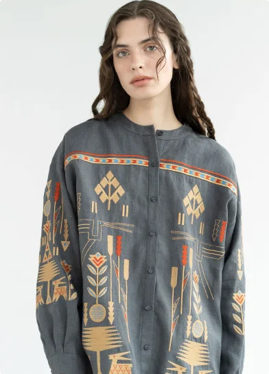

<section class="hero-section">
  <div class="hero-wrapper container">
    <div class="hero-title-order-wrapper">
      <h1 class="hero-title">
        Reviving the traditional
        <span class="accent-color">Ukrainian</span> artistry in every stitch.
      </h1>

      <a class="hero-order-btn" href="#"
        >Order
        <svg class="hero-order-icon" width="26" height="10">
          <use href="../images/sprite.svg#icon-arrow"></use>
        </svg>
      </a>
    </div>

    <picture class="hero-img-vyshyvanka">
      <!-- Desktop screen -->
      <source
        media="(min-width: 1280px)"
        width="392"
        height="545"
        srcset="
          ../images/hero-desktop.webp    1x,
          ../images/hero-desktop@2x.webp 2x
        "
        type="image/webp"
      />
      <!-- Tablet screen -->
      <source
        media="(min-width: 768px)"
        width="413"
        height="575"
        srcset="../images/hero-tablet.webp 1x, ../images/hero-tablet@2x.webp 2x"
        type="image/webp"
      />
      <!-- Mobile screen -->
      <source
        media="(max-width: 767px)"
        srcset="../images/hero-mobil.webp 1x, ../images/hero-mobil@2x.webp 2x"
        type="image/webp"
      />
      
    </picture>

    <div class="hero-made-wrapper">
      <svg class="hero-made-icon" width="52" height="51">
        <use href="../images/sprite.svg#icon-star"></use>
      </svg>

      <p class="hero-made-text">all embroidery is made by hand</p>
    </div>

    <div class="hero-ukr-wrapper">
      <picture class="hero-ukr-image">
        <!-- Desktop screen -->
        <source
          media="(min-width: 1440px)"
          srcset="
            ../images/hero-ukr-desktop-1440.webp    1x,
            ../images/hero-ukr-desktop-1440@2x.webp 2x
          "
          type="image/webp"
        />
        <!-- Desktop screen -->
        <source
          media="(min-width: 1280px)"
          srcset="
            ../images/hero-ukr-desktop-1280.webp    1x,
            ../images/hero-ukr-desktop-1280@2x.webp 2x
          "
          type="image/webp"
        />
        <!-- Tablet screen -->
        <source
          media="(min-width: 768px)"
          srcset="
            ../images/hero-ukr-tablet.webp    1x,
            ../images/hero-ukr-tablet@2x.webp 2x
          "
          type="image/webp"
        />
        
      </picture>
    </div>
  </div>
</section>
